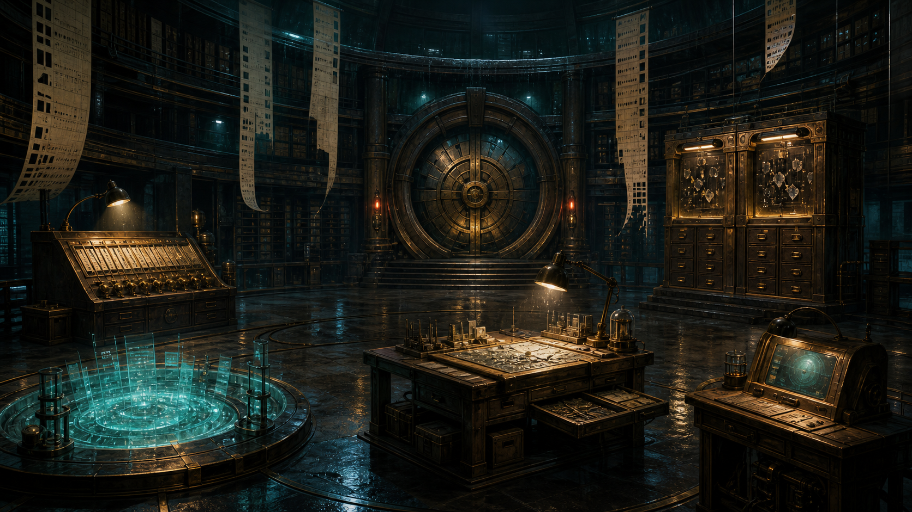

雨夜调查局 · 第 03 案
AI行为调查局
失踪的第七码卷宗
档案库记得每一页。
可它找回的答案，没有一页来自正确的卷宗。
进入第七码库
→
查看回声档案
← 返回主页
返回案件目录
CASE
03
一场关于“怎样找回正确证据”的调查
E
AI行为调查局
失踪的第七码卷宗
调查进度
0 / 5
返回主页
案件目录
?
◇
回声档案

01
编号检索台
02
含义回声池
03
无名残页
04
冲突记录柜
05
呼叫澜
06
第七码封存门
回声网络节点 · ABI-ECHO-00/03
市政档案馆 · 第七码卷宗库
澜
×